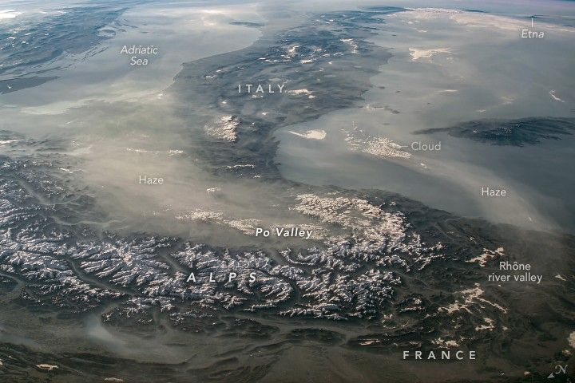

Haze Sweeps Over the Mediterranean
An External High-Definition Camera (EHDC) mounted on the exterior of the International Space Station captured this oblique photo of Italy and part of neighboring France. Taken with a short focal length lens, the wide-view image looks southeast from the region’s mountainous interior (center) to the island of Sicily (top right).
The snowcapped Alps are visible in the foreground with the Po Valley immediately south of the mountain range. This view illustrates distinctive differences in the appearance of the snow on the mountains and the clouds and haze in the atmosphere. The high-resolution version of this image also shows an ash plume rising from Etna, visible on the horizon at the top right corner of the image. The image was captured as the space station orbited over western France about 1700 kilometers (1060 miles) from the volcano.
Haze obscures the floor of the Po Valley, the industrial heartland of Italy. Past studies of similar haze events suggest that the haze is dominantly industrial smog. The results of those studies were based on an image of the eastern United States in which atmospheric pressure, humidity, visibility, and atmospheric chemistry were known. Industrial haze from the central and upper Po River Valley tends to accumulate to visible levels when atmospheric conditions are stable. The surrounding mountains help concentrate the haze and prevent easy dispersal. The haze is dense enough that the landscape of the valley is obscured from view.
The transport of haze by light winds has been observed from spacecraft for decades. Under these atmospheric conditions, it is common to see the haze-rich airmass flowing over the Adriatic Sea and then southward for hundreds of kilometers towards Greece. Astronaut photos of the Po Valley taken during space station Expedition 6 and Expedition 13 also show the phenomenon.
Similarly, a small column of haze on the right side of the image appears as a light-toned mass against the darker surface of the Mediterranean Sea. This mass is sourced in the cities of France’s Rhône river valley. Here, the haze exits southward from the valley and continues along Italy’s west coast, at least as far as Sicily.